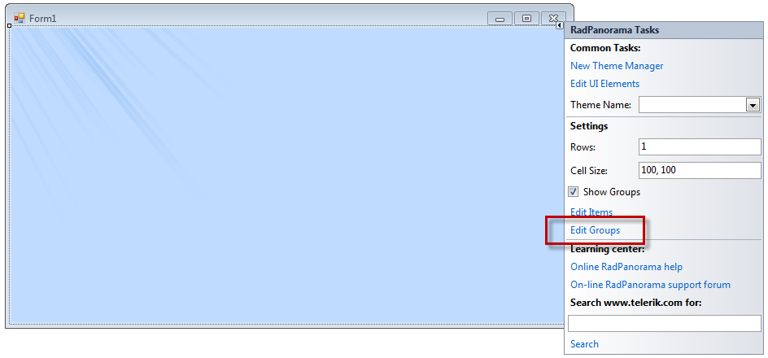
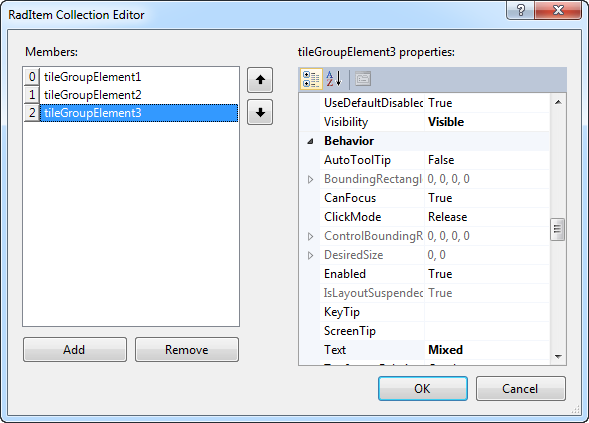
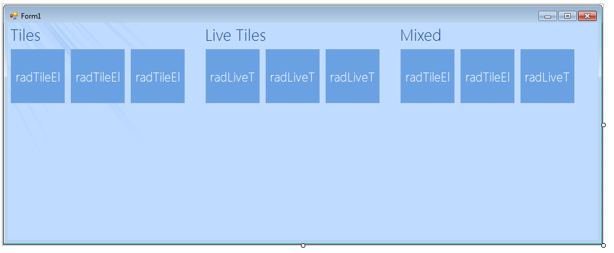
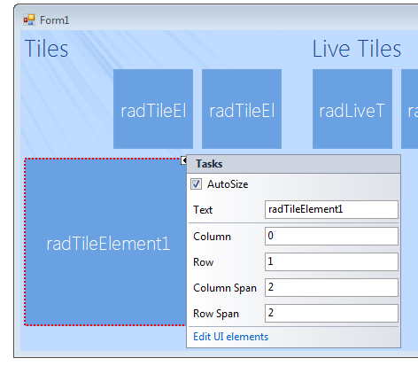
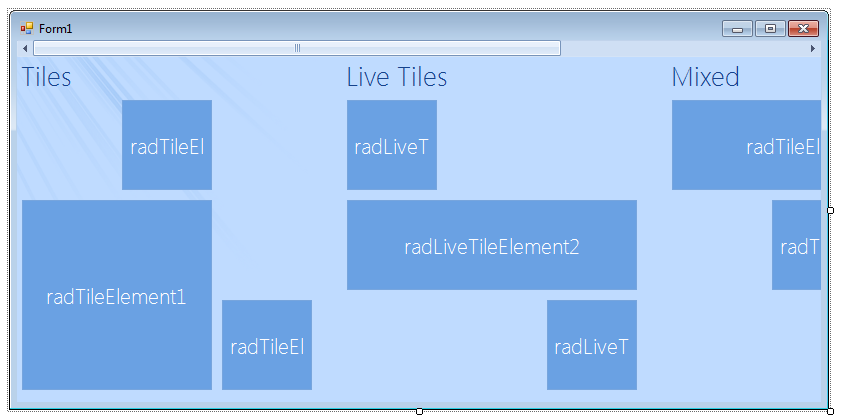

Getting Started
| RELATED VIDEOS | |
| [Getting started with RadPanorama ](http://tv.telerik.com/watch/winforms/getting-started-with-radpanorama) | In this video, we are going to see what it takes to get started with the RadPanorama. RadPanorama is a control that displays elements of type RadTileElement in a mosaic manner. This control is inspired by the Metro Start Menu screen of Windows 8. |
This article will demonstrate how to get started with RadPanorama control.
You will be guided through the process of creating a sample application step-by-step.
Let’s start by adding RadPanorama control to the form and setting its Dock
property to Fill in the properties window.Click the RadPanorama control and the Smart Tag will appear in
the upper right corner. Click the Smart Tag and the menu will popup.In the Smart Tag menu click the Edit Groups link:
RadItemCollection editor will be opened. Add three groups and set their Text
properties to: Tile, Live Tiles, MixedNow, navigate to the Items property of each group and add few items in it.
In this case the first group will contain only RadTileElements, the
second group only RadListTileElements and the third group both types
of elements.

Then click OK to close the editor.
Go back to the Smart Tag menu and check the Show Groups check box.
Select each tile and in each tile’s Smart Tag, edit its Column,
Row, Column Span and Row Span properties.
Once you are done with the customization of the properties, if the size that the items
need is greater than the control size, the scroll bar will automatically be shown:
The layout is done. You can customize each item according to your needs and also you can subscribe
to the Click event of each of them, in order to perform some action upon click.
To customize RadLiveTileElements, you can use the
Live Tile Editor